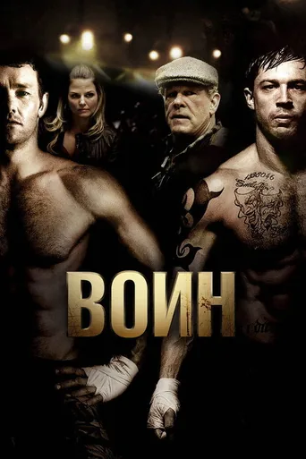

Воин 2011
Боец Томми Конлон приезжает навестить отца, в прошлом алкоголика, которого не видел 14 лет. Семейное прошлое у Томми и его брата Брендана было не сильно радужное, но теперь Томми просит отца вновь, как и в детстве, стать его тренером, чтобы выиграть турнир MMA «Спарта» с призом в 5 миллионов долларов. В это же время Брендан, семьянин и отец троих детей, который работает учителем физики в школе, тщетно пытается справиться с финансовыми трудностями. Узнав, что банк через 3 месяца отберёт у них дом за долги, он возвращается к боям за деньги, из-за чего его в итоге отстраняют от работы. Заручившись поддержкой старого друга-тренера, он тоже решает участвовать в турнире, ещё не зная, что встретит там брата.
Открыть в каталогеДанные и постеры принадлежат их правообладателям. Этот продукт использует TMDB API, но не одобрен и не сертифицирован TMDB.